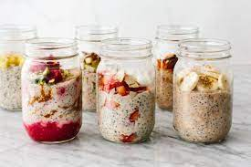
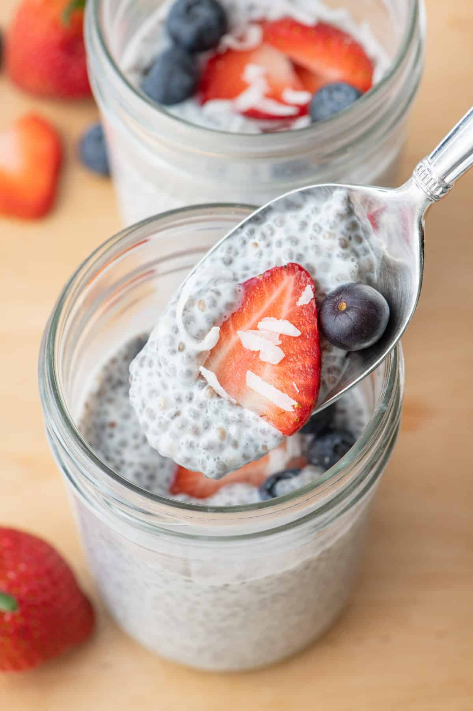
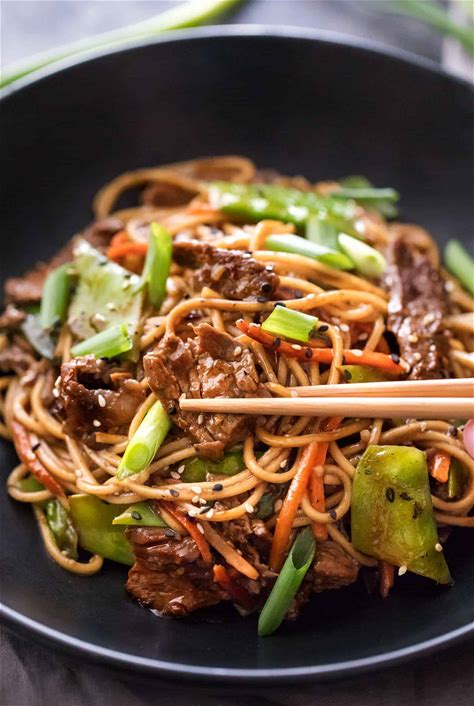
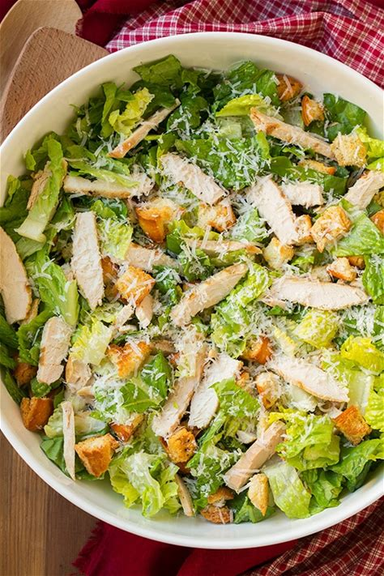
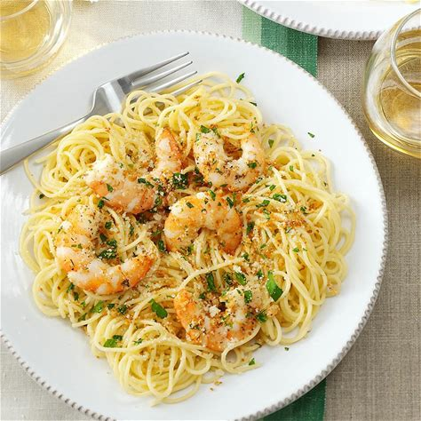

Breakfast

Basic Overnight Oats
Description: Overnight oats are a healthy, delicious, and easy way to start your day. With so many flavor combinations to choose from, you're sure to find a recipe that you'll love.

Scrambled Eggs with Cheese
Description:
This simple yet satisfying dish is a breakfast staple for good reason. With just a few eggs, some cheese, and your favorite toppings, you can whip up a quick and nutritious meal that will keep you energized all morning long.

Strawberry Banana Smoothie
Description:
This strawberry banana smoothie is made from four simple ingredients - strawberries, banana, milk and yogurt. Watch the video above to see how quickly it comes together!

Red Berry Protein Smoothie
Description:
This smoothie is so simple and delicious, with the addition of white beans making it super creamy and chock full of protein. Don't worry, you won't even know the beans are in there. Vegan, vegetarian, dairy-free, and refined sugar-free, this is one easy smoothie that will fast make it into your regular routine.

Acai Bowl
Description:
Ready in just a few minutes, this Acai Bowl Recipe is filled with acai berry puree, fruit, and all your favorite toppings. Learn how easy it is to make your very own Acai Bowl right from home and enjoy this powerhouse of fiber, antioxidants, and healthy fats anytime you want for a fraction of the cost!
Eggs Benedict with homemade Hollandaise Sauce
Description:
Eggs Benedict is my favorite breakfast menu item, and it's super easy to make from home! It starts with a toasted english muffin, topped with a slice or two of Canadian bacon, a poached egg, and smothered in traditional Eggs Benedict sauce, called hollandaise sauce.

Chia Pudding
Description:
This 3-Ingredient Chia Pudding is made with almond milk, chia seeds & sweetener of choice; it’s a healthy snack loaded with protein, fiber and healthy fats!
Lunch
Dinner

Spaghetti Bolognese
Description: Ground beef, onion, garlic, tomatoes, spaghetti, olive oil, salt, pepper.

Chicken Alfredo
Ingredients: Chicken breast, fettuccine, heavy cream, parmesan cheese, butter, garlic, salt, pepper.

Beef Stir Fry
Ingredients: Beef strips, broccoli, bell peppers, soy sauce, ginger, garlic, vegetable oil.

Margherita Pizza
Ingredients: Pizza dough, tomato sauce, fresh mozzarella, basil, olive oil, salt.

Grilled Salmon
Ingredients: Salmon fillets, lemon, dill, olive oil, salt, pepper.

Vegetarian Stir Fry
Ingredients: Tofu, broccoli, carrots, snap peas, soy sauce, ginger, garlic, sesame oil.

Chicken Caesar Salad
Ingredients: Grilled chicken, romaine lettuce, croutons, parmesan cheese, Caesar dressing.

Shrimp Scampi
Ingredients: Shrimp, linguine, garlic, white wine, lemon, butter, parsley.

BBQ Pulled Pork Sandwich
Ingredients: Pulled pork, barbecue sauce, coleslaw, hamburger buns.

Veggie Wrap
Ingredients: Hummus, whole wheat wrap, cucumber, tomato, bell peppers, lettuce, feta cheese.
Desserts

Gluten-Free Chocolate Cake
A rich and moist chocolate cake that is perfect for any chocolate lover. Indulge in the delightful combination of gluten-free flour, cocoa, sugar, and non-dairy alternatives.

Gluten-Free Strawberry Cheesecake
Creamy cheesecake with a gluten-free graham cracker crust, topped with fresh strawberries. This gluten-free version is a delicious and elegant dessert for any occasion, made without traditional gluten-containing ingredients.